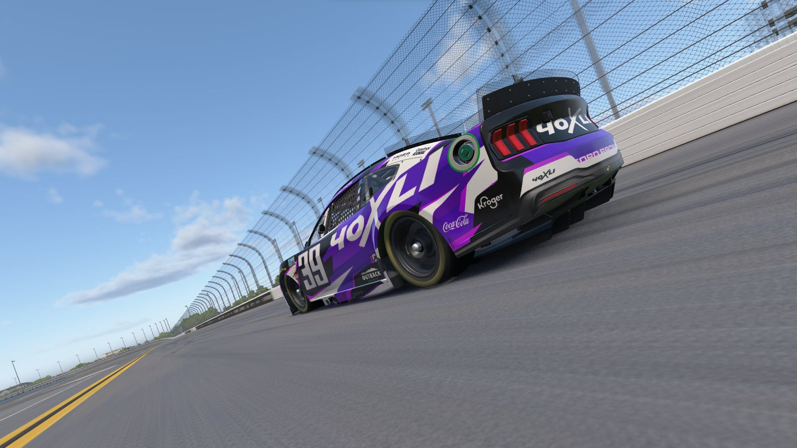
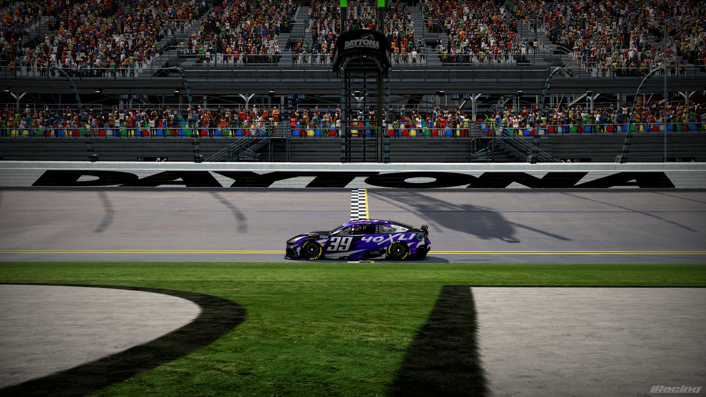
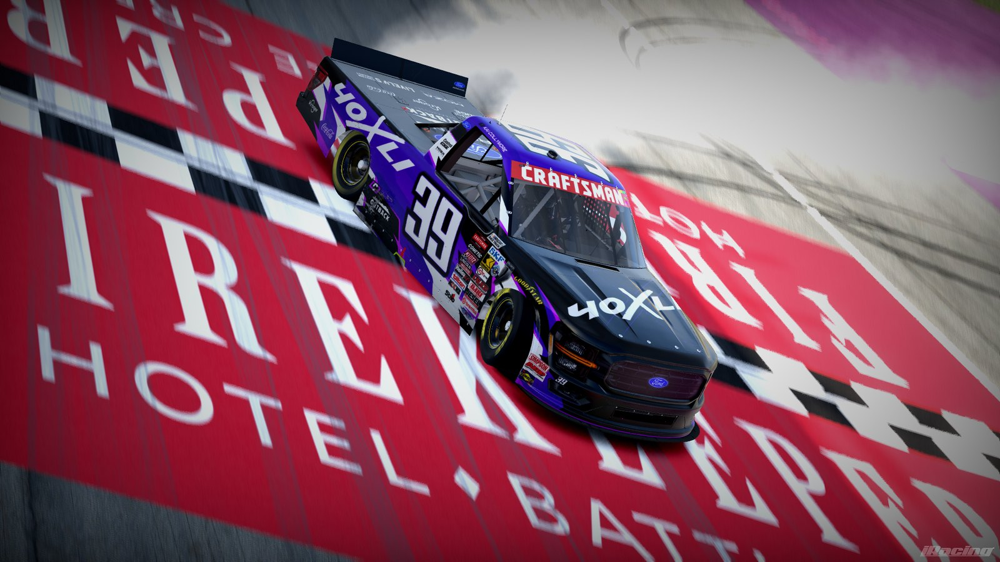
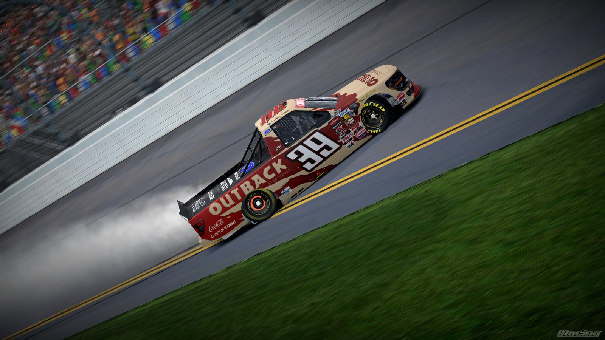

DRIVER · FOUNDING MEMBER
Kai
Collymore

Driver stats
Last updated Oct 19, 2026
IRACING · ASPHALT OVAL
CAREER TOTALS
Includes official iRacing races and league events.
Notable results
Won the 2025 Florida 500
Marquee standalone race · 2025
Most races run for 40XLI
Team record · with 40XLI since day one
About
Hailing from Northern Indiana, Kai excels at drafting tracks, with a knack for saving tires and being there at the end of long runs. He has been with 40XLI since its inception, representing the team across numerous official sessions and a multitude of leagues.
Liveries




Recent results
Full results on the INRS League HubRichmond Raceway
INRS Cup · Rd 26 · Started 18th
Iowa Speedway
INRS Cup · Rd 25 · Started 17th
Indianapolis Motor Speedway
INRS Cup · Rd 24 · Started 4th
North Wilkesboro Speedway
INRS Cup · Rd 23 · Started 9th
EchoPark Speedway (Atlanta)
INRS Cup · Rd 22 · Started 14th · 48 laps led